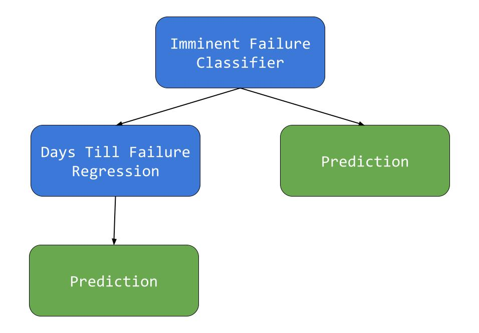
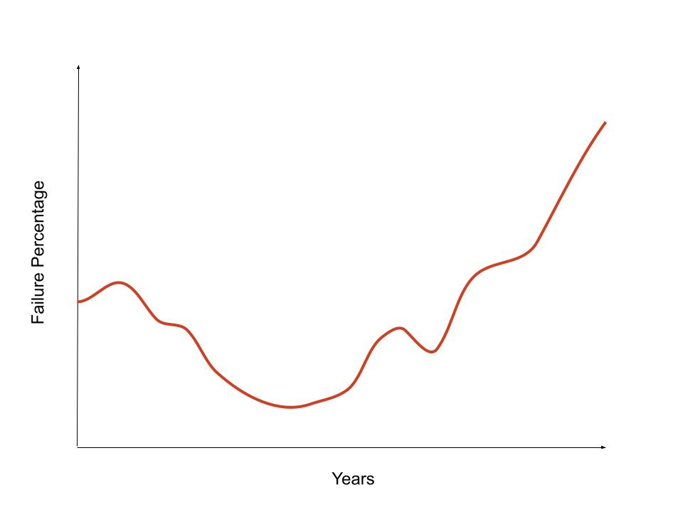

A review of the learning model and the results.
With hundreds of thousands of servers running at Intel’s data centers around the world, many are susceptible to crash and fail due to faulty hard drives and lack of maintenance. During my time at Intel, I proposed and developed a packaged tool that predicts imminent hard drive failures up to months before they actually occur. An ample amount of data was required to be collected in order to train a versatile model applicable to many hard drives, so the project was split into three major tasks.
1. Data Collection
2. Data Preparation
3. Model Training
Most hard drives have a vendor provided drive-level metric for reading attributes. One prominent metric is known as S.M.A.R.T (Self-Monitoring, Analysis-and-Reporting-Technology). S.M.A.R.T. provides internal attributes about the hard drive which can serve as features for a potential machine learning model. For instance, the following table depicts some such features/attributes about a hypothetical hard drive.
| ID | Attribute Name | Ideal |
|---|---|---|
| 0x01 | Read Error Rate | 116 |
| 0x03 | Spin-Up Time | 95 |
| 0x04 | Start/Stop Count | 26 |
| 0x09 | Power on Hours | 34,484.65 |
| 0x0C | Power Cycle Count | 124 |
| 0xBB | Uncorrectable Errors | 199 |
| 0xC1 | Load/Unload Count | 162 |
| 0xC2 | Temperature Celcius | 36 °C |
| *This table's data is fabricated due to Intel's intellectual property protection terms and conditions. | ||
As seen in the table above, the S.M.A.R.T. attributes range from 0-255 potential factors, but these are just some of the many attributes.
S.M.A.R.T. attributes for thousands of hard drives from different host servers were accumulated into a MongoDB collection database that I setup with a persistent volume. The data collection phase resulted in about 4 months of S.M.A.R.T. data for thousands of drives.
The collected data could not be used immediately without proper cleaning techniques such as statisical normalization and ommitting superfluous attributes/features. This was done through understanding the importance of each of the attributes and avoiding columns that had more than 75% missing data.
For particular S.M.A.R.T. attributes, healthier hard drives all have lower counts in common. While for other attributes, the higher the number, the better. This metric for internal components and readings of the hard drive go on a case by case basis which is what the training data needed to incorporate. Understanding the physical characteristics of the hard drive helped allow me to feature engineer proper training data for the model. For instance, unallocated sectors and reported uncorrectable errors mean that the hard drive may be faulty which can later develop into a severe hardware error.
A Stochastic Gradient Descent Neural Network model was chosen due to its run-time efficiency at high dimensional feature counts. I validated features for the classifier using the following techniques:
Information Gain is essentially a quantification on how important a feature is to the model in determing the correct answer. Using the feature importances, specific weightages can be applied to increase the overall accuracy (AUC/ROS) of the model. A confusion matrix is essentially a error table that indicates the the number of successes and failures with false positives, true positives, false negatives, and true negatives. This can be useful in determining when and where the model is consistently lapsing in the test cases. Finally, using an ensemble of learners helps validate the weightages and selection choices of the features for the primary model. If the accuracy scores and the mean squared errors (MSEs) are consistent within the ensemble, that is a good sign.
As mentioned before, the purpose of this model was not only just to predict if an imminent hard drive failure was going to happen, but when it was going to happen with a high confidence. This lead me to implement a pipeline design with an ensemble of two models, one being a classifier and the other being a regression. The Imminent Failure Classifier first predicts whether or not the hard drive is likely to fail depending on its health through S.M.A.R.T. and its present-day features. If it is not likely to fail in the next 4 months, the prediction yields that it is a healthy hard drive. However if it was likely to fail within the next 4 months, the sample hard drive is processed to the next Stochastic Gradient Descent Regressor which estimates the number of days until the failure occurs. The model uses the S.M.A.R.T. data for the hard drive on that specific day and leverages it with the hundreds of thousands of training samples of hard drives. It yields a prediction with an approximate number of "days till the failure" and a confidence interval of how likely it is to actually happen.
The graph on the left is commonly known as the "Bathtub Curve." This graph is used to describe regressions of the probability of a certain item's life expectancy. Just like how a biotic element is more likely to die at its early stages of life, the graph depicts a higher failure percentage for newly manufactured hard drives. This is due to manufacturing defects, lack of run-time, and many other factors. The graph is concave up while declining until the midpoint of the hard drive's life. At this point, the likelihood of failure is at its lowest which indicates a healthy hard drive. Moving forward, the curve starts to increase with a larger derivative which is primarily due to the hard drive reaching its end-of-life (EOL). When training and testing the models, I discovered this same phenomenon with the samples of drives that I was working with. Our results indicated an average failure rate (AFR) of 3-4% for a typical hard drive in a datacenter.
FINAL MODEL WITH AN ACCURACY OF 97% ON TEST HOSTS